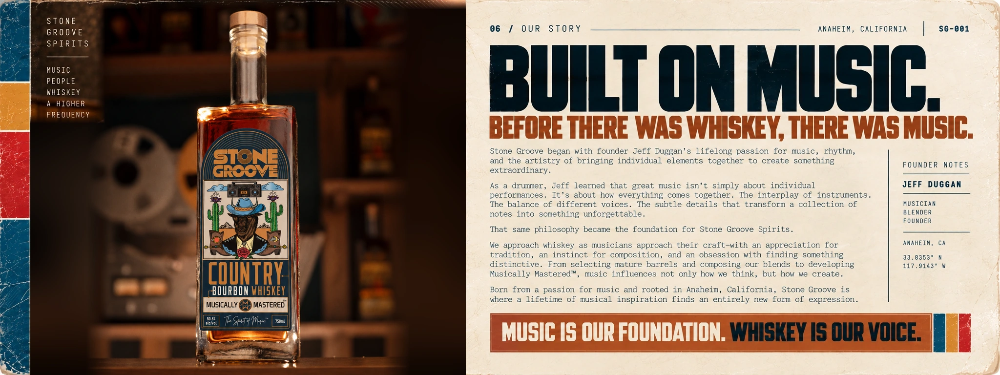
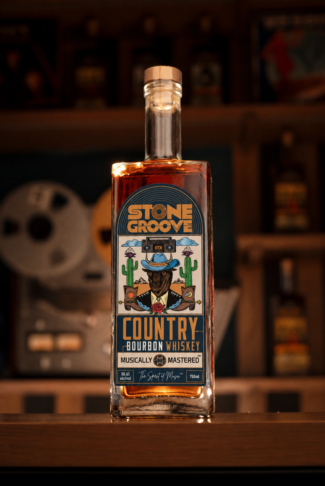
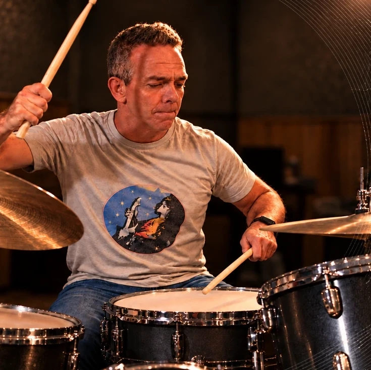
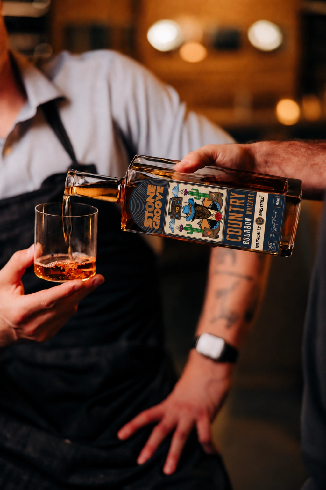

BUILT ON MUSIC.
BEFORE THERE WAS WHISKEY, THERE WAS MUSIC.
SHISHA SAMPLE began with founder Jeff Duggan’s lifelong passion for music, rhythm, and the art of bringing distinct voices together to create something extraordinary.
As a drummer, Jeff learned that the magic of a great performance lives in the interplay—in what each musician brings, and in how the parts become a whole.
Built on Music. Before there was whiskey, there was music.
IT STARTED
WITH THE MUSIC.
The music was never just what played in the background. It was the starting point.
Jeff Duggan came to whiskey with a musician’s ear. Years behind a drum kit shaped the way he thinks about rhythm, tension, restraint, and the relationship between individual parts.
In a band, no one instrument tells the whole story. It takes instinct, listening, and a willingness to make space for other voices. That idea would become the foundation for SHISHA SAMPLE.


THE ART IS IN
THE ARRANGEMENT.
Different barrels. Different personalities. One original composition.
SHISHA SAMPLE begins with carefully selected mature whiskeys and brings them together with a clear creative intent. As in music, the most compelling result is not necessarily the loudest individual part—it is the balance, energy, and character of the entire arrangement.
Jeff’s background in chemistry and computer science adds another dimension to that musical perspective: sound is not only expressive; it is physical energy. This thinking is part of the inspiration behind Musically Mastered™, our proprietary approach to bringing the physical energy of music into the craft of whiskey. Music is not simply part of the atmosphere. It is part of our point of view.
ONE LIFELONG INFLUENCE. A DIFFERENT KIND OF EXPRESSION.
MUSIC IS OUR
FOUNDATION.
WHISKEY IS
OUR VOICE.
SHISHA SAMPLE is where a lifetime of musical inspiration finds a new form. Four whiskey expressions, each with a voice of its own—built with purpose, driven by curiosity, and made to be experienced.